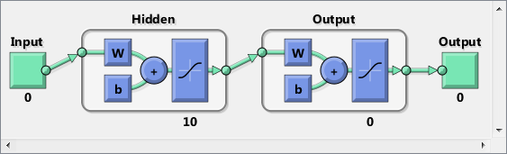
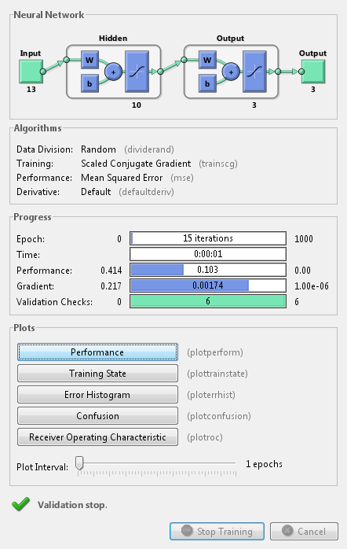
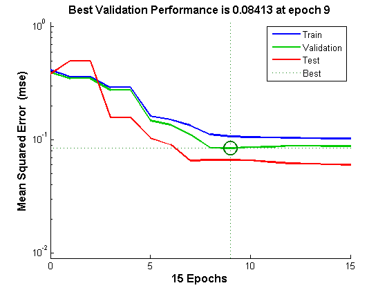
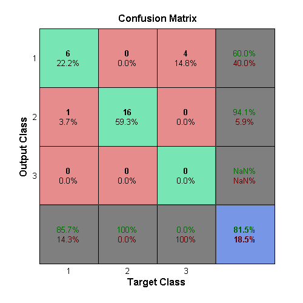
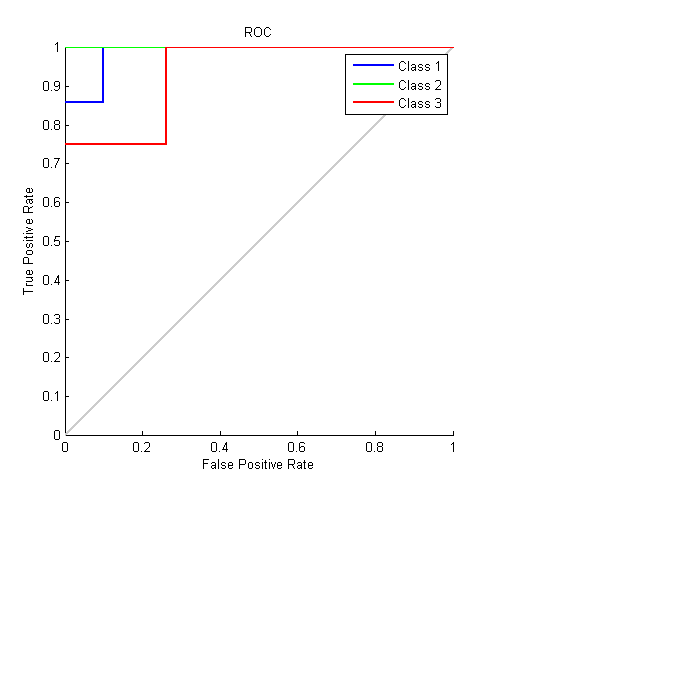

Wine Classification
This example illustrates how a pattern recognition neural network can classify wines by winery based on its chemical characteristics.
Contents
The Problem: Classify Wines
In this example we attempt to build a neural network that can classify wines from three wineries by thirteen attributes:
1. Alcohol
2. Malic acid
3. Ash
4. Alcalinity of ash
5. Magnesium
6. Total phenols
7. Flavanoids
8. Nonflavanoid phenols
9. Proanthocyanins
10. Color intensity
11. Hue
12. OD280/OD315 of diluted wines
13. ProlineThis is an example of a pattern recognition problem, where inputs are associated with different classes, and we would like to create a neural network that not only classifies the known wines properly, but can generalize to accurately classify wines that were not used to design the solution.
Why Neural Networks?
Neural networks are very good at pattern recognition problems. A neural network with enough elements (called neurons) can classify any data with arbitrary accuracy. They are particularly well suited for complex decision boundary problems over many variables. Therefore neural networks are a good candidate for solving the wine classification problem.
The thirteeen neighborhood attributes will act as inputs to a neural network, and the respective target for each will be a 3-element class vector with a 1 in the position of the associated winery, #1, #2 or #3.
The network will be designed by using the attributes of neighborhoods to train the network to produce the correct target classes.
Preparing the Data
Data for classification problems are set up for a neural network by organizing the data into two matrices, the input matrix X and the target matrix T.
Each ith column of the input matrix will have thirteen elements representing a wine whose winery is already known.
Each corresponding column of the target matrix will have three elements, consisting of two zeros and a 1 in the location of the associated winery.
Here such a dataset is loaded.
[x,t] = wine_dataset;
We can view the sizes of inputs X and targets T.
Note that both X and T have 178 columns. These represent 178 wine sample attributes (inputs) and associated winery class vectors (targets).
Input matrix X has thirteen rows, for the thirteen attributes. Target matrix T has three rows, as for each example we have three possible wineries.
size(x) size(t)
ans =
13 178
ans =
3 178
Pattern Recognition with a Neural Network
The next step is to create a neural network that will learn to classify the wines.
Since the neural network starts with random initial weights, the results of this example will differ slightly every time it is run. The random seed is set to avoid this randomness. However this is not necessary for your own applications.
setdemorandstream(391418381)
Two-layer (i.e. one-hidden-layer) feed forward neural networks can learn any input-output relationship given enough neurons in the hidden layer. Layers which are not output layers are called hidden layers.
We will try a single hidden layer of 10 neurons for this example. In general, more difficult problems require more neurons, and perhaps more layers. Simpler problems require fewer neurons.
The input and output have sizes of 0 because the network has not yet been configured to match our input and target data. This will happen when the network is trained.
net = patternnet(10); view(net)
Now the network is ready to be trained. The samples are automatically divided into training, validation and test sets. The training set is used to teach the network. Training continues as long as the network continues improving on the validation set. The test set provides a completely independent measure of network accuracy.
The NN Training Tool shows the network being trained and the algorithms used to train it. It also displays the training state during training and the criteria which stopped training will be highlighted in green.
The buttons at the bottom open useful plots which can be opened during and after training. Links next to the algorithm names and plot buttons open documentation on those subjects.
[net,tr] = train(net,x,t); nntraintool
To see how the network's performance improved during training, either click the "Performance" button in the training tool, or call PLOTPERFORM.
Performance is measured in terms of mean squared error, and shown in log scale. It rapidly decreased as the network was trained.
Performance is shown for each of the training, validation and test sets. The version of the network that did best on the validation set is was after training.
plotperform(tr)
Testing the Neural Network
The mean squared error of the trained neural network can now be measured with respect to the testing samples. This will give us a sense of how well the network will do when applied to data from the real world.
The network outputs will be in the range 0 to 1, so we can use vec2ind function to get the class indices as the position of the highest element in each output vector.
testX = x(:,tr.testInd); testT = t(:,tr.testInd); testY = net(testX); testIndices = vec2ind(testY)
testIndices =
Columns 1 through 13
1 1 1 2 1 1 1 2 2 2 2 2 2
Columns 14 through 26
2 2 2 2 2 2 2 2 2 2 1 1 1
Column 27
1
Another measure of how well the neural network has fit the data is the confusion plot. Here the confusion matrix is plotted across all samples.
The confusion matrix shows the percentages of correct and incorrect classifications. Correct classifications are the green squares on the matrices diagonal. Incorrect classifications form the red squares.
If the network has learned to classify properly, the percentages in the red squares should be very small, indicating few misclassifications.
If this is not the case then further training, or training a network with more hidden neurons, would be advisable.
plotconfusion(testT,testY)
Here are the overall percentages of correct and incorrect classification.
[c,cm] = confusion(testT,testY) fprintf('Percentage Correct Classification : %f%%\n', 100*(1-c)); fprintf('Percentage Incorrect Classification : %f%%\n', 100*c);
c =
0.1852
cm =
6 1 0
0 16 0
4 0 0
Percentage Correct Classification : 81.481481%
Percentage Incorrect Classification : 18.518519%
A third measure of how well the neural network has fit data is the receiver operating characteristic plot. This shows how the false positive and true positive rates relate as the thresholding of outputs is varied from 0 to 1.
The farther left and up the line is, the fewer false positives need to be accepted in order to get a high true positive rate. The best classifiers will have a line going from the bottom left corner, to the top left corner, to the top right corner, or close to that.
plotroc(testT,testY)
This example illustrated how to design a neural network that classifies wines into three wineries from each wine's characteristics.
Explore other examples and the documentation for more insight into neural networks and their applications.